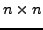
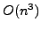
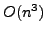

The Kalman filter provides the basis for data assimilation in a wide
variety of applications, including the prediction of extreme weather
events (e.g., hurricane tracks), and the evolution of contaminant plumes
in the subsurface. In these high-dimensional nonlinear models,
statistical variants of the Extended Kalman Filter (EKF) are commonly
used. Here we will focus on the Ensemble Kalman filter (EnKF), which uses
a statistical approach to alleviate the high-cost of evolving the error
covariance matrix. However, as more data becomes available for
assimilation, potentially tens of thousands of data points are
available in some applications today, a new bottleneck in the EnKF
arises. This bottleneck is the storage and inversion of the matrix
embedded in the computation of the Kalman gain matrix. In particular, if
this matrix is formed explicitly it is dense and of dimension
, where  is the number of data points. Typically, current
implementations of the EnKF do form this dense matrix and then compute
either the LU decomposition or the singular value decomposition to
facilitate the explicit computation of the Kalman gain matrix. These
methods exhibit a cost of  making them expensive and time
consuming, moreover, the assimilation algorithm only requires the action
of the Kalman gain matrix on a vector. In this work we propose
a matrix-free preconditioned Krylov iteration to compute the action of
the required inverse matrix on a vector. To provide the action of a
spectrally equivalent approximate inverse for the preconditioning step,
we express the matrix using the Sherman-Morrison identity and leverage an
established inversion process. Thus, we avoid the cost of storing the
matrix while providing an algorithm that scales optimally with the number
of data points to be assimilated. Additionally this algorithm provides an
readily parallelizable approach to this critical component of the EnKF
method.
is the number of data points. Typically, current
implementations of the EnKF do form this dense matrix and then compute
either the LU decomposition or the singular value decomposition to
facilitate the explicit computation of the Kalman gain matrix. These
methods exhibit a cost of  making them expensive and time
consuming, moreover, the assimilation algorithm only requires the action
of the Kalman gain matrix on a vector. In this work we propose
a matrix-free preconditioned Krylov iteration to compute the action of
the required inverse matrix on a vector. To provide the action of a
spectrally equivalent approximate inverse for the preconditioning step,
we express the matrix using the Sherman-Morrison identity and leverage an
established inversion process. Thus, we avoid the cost of storing the
matrix while providing an algorithm that scales optimally with the number
of data points to be assimilated. Additionally this algorithm provides an
readily parallelizable approach to this critical component of the EnKF
method.